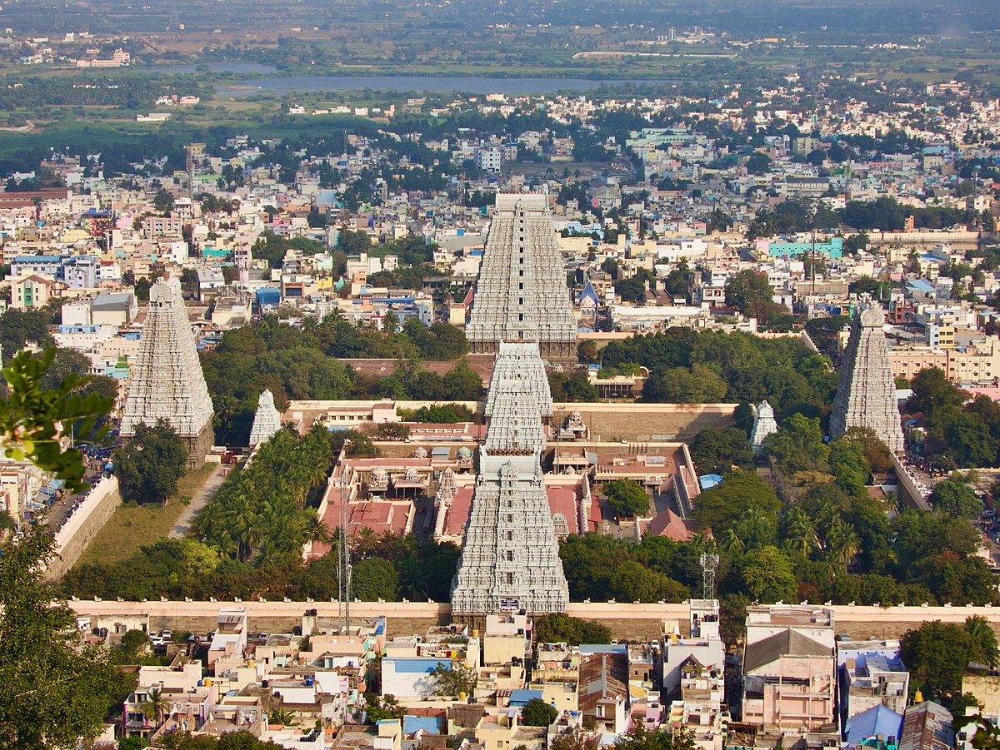

Tiruvannamalai -The Temple City
Arunachaleswar Temple

The Arunachaleswar Temple, situated in Tiruvannamalai, Tamil Nadu, is one of the largest and oldest Shiva temples in India.
Dedicated to Lord Shiva, it stands at the foot of the sacred Arunachala Hill.
The temple's architecture showcases intricate Dravidian style, adorned with ornate carvings and towering gopurams (gateway towers).
Devotees flock here to pay homage to Lord Shiva and seek spiritual enlightenment.
The temple complex encompasses various shrines, tanks, and mandapams (halls) reflecting the rich cultural heritage of the region.
Arunachaleswar Temple hosts vibrant festivals like Karthigai Deepam, attracting pilgrims and tourists from across the globe.